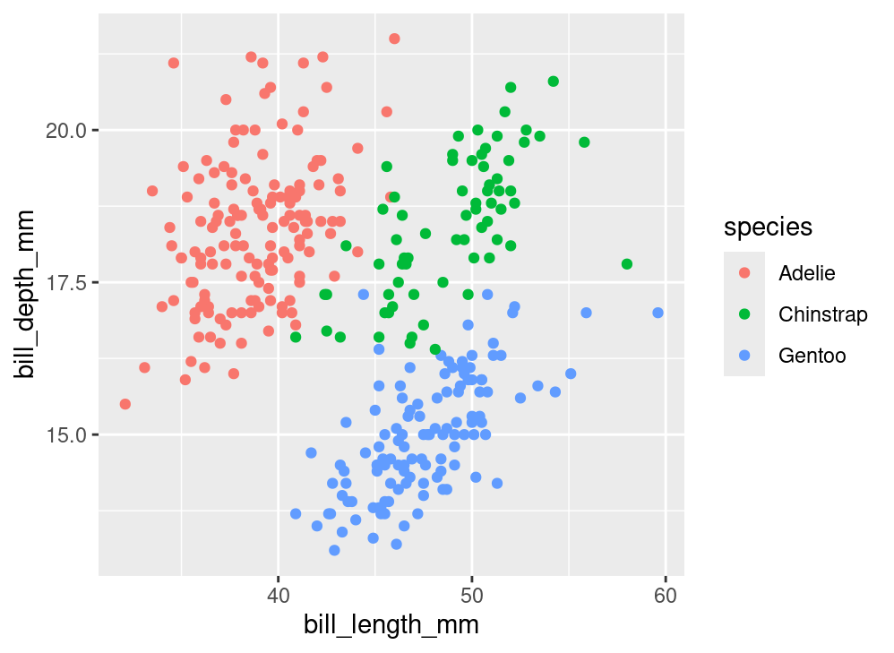
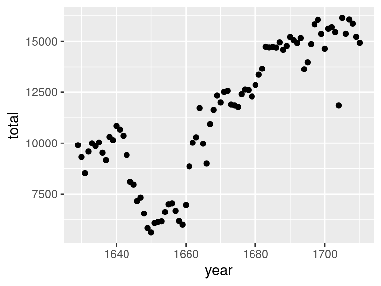

A Grammar of Graphics
A unified framework for constructing statistical graphics.
In the last set of notes, we saw that there is a side to the discipline of Statistics that looks like engineering. Summary statistics - medians, standard deviations, etc. - are carefully crafted tools that capture different characteristics of a data set for use in very specific situations. There is another practice in statistics that looks more like a science; that is, a field that seeks to take many different phenomena and explain them using a systematic overarching theory. That practice is data visualization.
At this point in the course, you’ve seen several several examples of data visualizations.

The diversity of shapes and structures used in these plots suggest that each one is a thing-unto-itself, specially devised to provide one particular style of visualization. But what elements do they share?
Focus on the nature of the data being used. Exactly half of the plots above are illustrating the distribution of a single variable; the other half illustrate the relation between two variables. Can you tell which is which?
Consider the manner in which variability in the data is being conveyed used different visual cues. How many of the plots above utilize an x-axis? A y-axis? Color?
Finally, how are the observations finding their way onto the plot? Three of the plots above share the same data variable, utilize the same visual cues, and differ only in the shape used to encode the observations.
By asking these questions, we begin to find recurring structures in a wide range of plot types. These recurring structures have been compiled into a widely-used framework called the Grammar of Graphics.
The Grammar of Graphics
In 1999, a statistician named Leland Wilkinson published the first edition of what has been the most influential work in data visualization, The Grammar of Graphics1. The title is fitting. In the same way that a grammar defines the regular structures and composition of a language, his book outlines a framework to structure statistical graphics.

Nearly every current software tool used to build plots has been informed by this book2. Its influence can be found in Tableau, Plotly, and the Python libraries bokeh, altair, seaborn, and plotnine. The most complete implementation of the grammar is found in an R package called ggplot2 by Hadley Wickham3.
In Wickham’s adaptation of the grammar of graphics, a plot can be decomposed into three primary elements:
- the data,
- the aesthetic mapping of the variables in the data to visual cues, and
- the geometry used to encode the observations on the plot.
Let’s go through each of these components one-by-one to understand the role that they play in a plot like this, which we’ll refer to as the “penguin plot”.
The above plot is an example new type of plot which involves two numerical variables: a scatter plot. The points may also be colored by a third variable, generally a categorical one.
Data
What variables are needed to construct the penguin plot above?
We see bill_length_mm and bill_depth_mm; those are labeled clearly on the x and y axes. We must also know the species of each of these penguins in order to know which color to label each point. In other words, there are three columns of a data frame that we need to have on hand.
# A tibble: 333 × 3
bill_length_mm bill_depth_mm species
<dbl> <dbl> <fct>
1 39.1 18.7 Adelie
2 39.5 17.4 Adelie
3 40.3 18 Adelie
4 36.7 19.3 Adelie
5 39.3 20.6 Adelie
6 38.9 17.8 Adelie
7 39.2 19.6 Adelie
8 41.1 17.6 Adelie
9 38.6 21.2 Adelie
10 34.6 21.1 Adelie
# ℹ 323 more rowsThrough working on your assignments, you may have also seen the following plot, which is a variant of the “penguin plot”:
In this course we’ve talked plenty about the structure of a data frame, so this part of the grammar of graphics is straight-forward. Be sure that every variable that you wish to include in your plot is present in the same data frame.
More fundamentally, be sure the data you’re using is well-suited to the message you aim to convey with your plot. Many plots go wrong right here at the outset, so be sure you’re on firm footing.
Aesthetics
The most impactful decision that you’ll make when constructing a plot using the grammar of graphics is deciding how to encode variables in a data frame into visual variation in your plot.
The penguin plot relies upon three forms of visual variation. The first is the location along the x-axis. Penguins with longer bills are placed on the right side of the plot and those with shorter bills are placed on the left. Variation in bill depth is captured by variation in the location along the y-axis, which is the second form. The third form is color: each of the three species is designated by one of three colors.

We can summarize this encoding, or “aesthetic mapping”, as:
bill_length_mmis mapped to the x-axisbill_depth_mmis mapped to the y-axisspeciesis mapped to color
These are three of many different techniques for visually encoding variability. Here is a list of the aesthetic attributes that are most commonly used:
x: location along the x-axisy: location along the y-axiscolor: hue of the mark that represents the observationalpha: the level of transparency of the colorsize: the size of the mark representing the observationshape: the shape of the mark representing the observationfill: the color of the inside of the representation of an observation
Geometries
With the data set in place and the aesthetic mappings selected, the final choice in making our plot is to decide how to graphically express the observations themselves. For the penguin plot above, each observation in represented by a point, so it is said to use a “point” geometry. That is just one of many options. Other options are listed below.
pointbarlinehistogramdensityviolindotplotboxplot
When we speak about whether a plot is a scatter plot, a bar chart, a histogram, etc, we are discussing the geometry of a plot. The impact of this choice can be seen in the following two plots.
Both plots share the same data (penguins) and the same aesthetic mappings(bill_length to the x-axis and species to the y-axis). Where they differ is the geometry: the plot on the left uses the violin while the one on the right uses the boxplot.
Example: Births over Time
The following plot displays the total number of births over time recorded in London, England during the 17th century.
It was constructed from a data frame with 82 rows, the first six of which are shown below.
# A tibble: 6 × 2
year total
<int> <int>
1 1629 9901
2 1630 9315
3 1631 8524
4 1632 9584
5 1633 9997
6 1634 9855We can decompose this graphic using the grammar of graphics.
- data: the data frame displayed above
- aesthetic mappings: year is mapped to the x-axis, total is mapped to the y-axis
- geometry: the observations are expressed as a line
This process makes clear what decisions were made in constructing the plot and suggests ways in which we might consider changing the graphic. What if we changed the geometry so that the observations are expressed as points?

Is this a better graphic? That depends on the message you aim to convey. The line geometry emphasizes the general trend over time. The point geometry makes clearer the total births in each particular year.
What if you wanted to convey both of those messages? If two geometries are compatible, they can be combined.
Is this a better graphic? Again, that depends. It makes it possible to see both the trend over time and the individual observations. But this plot is more complicated and therefore articulates each of those individual messages less clearly. Sometimes simplicity and a single message is best.
Here’s another example of a plot that combines two geometries:

Here, a density geometry is overlaid on top of a histogram geometry. It is unclear whether this was a good design decision. What do you think? What is the advantage of a stair-step histogram versus the smooth line of a density curve?
Summary
The Grammar of Graphics is a framework to express a great variety of statistical graphics in terms of their shared elements. In this framework, the core features of the plot are the data, the aesthetic mapping between aesthetic attributions and variables in the data frame, and the geometry that is used to express the observation. There are a wide range of geometries and aesthetic attributes that can be drawn from and recombined in powerful ways. What we have done so far is cover just the fundamentals of the framework, so if you are unsatisfied with the resulting plots, that’s good. Now, we will polish up these plots to make thoughtful graphics that focus on effectively conveying a single message.
Footnotes
Wilkinson, Leland. The grammar of graphics. Springer Science & Business Media, 2005.↩︎
For more context around The Grammar of Graphics and the development of modern visualization tools, read the brief Three Waves of Data Visualization by Elijah Meeks, Senior Data Visualization Engineer at Netflix: https://www.tableau.com/about/blog/2019/2/three-waves-data-visualization-brief-history-and-predictions-future-100830.↩︎
The
ggplot2package is described in the manuscript, A layered grammar of graphics, by Hadley Wickham in the Journal of Computational and Graphical Statistics in 2010.↩︎